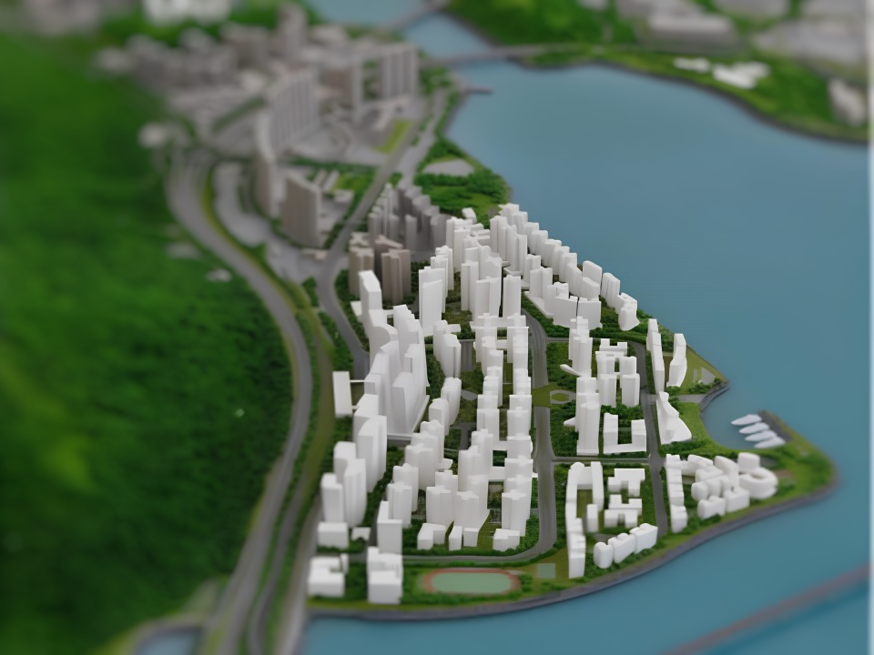
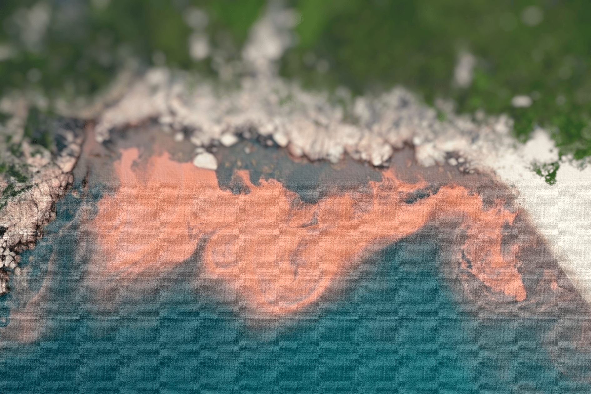

Is Hong Kong's ambitious 50-year town project delivering
on its vision? Dive into a spatial analysis that unveils
the city's urban truths, from environmental concerns to
commuting challenges. This study offers a fresh look at
Hong Kong's urban planning.

Explore the phenomenon of red tides in Hong Kong's
waters, caused by rapid algal blooms. Discover their
effects on marine life and local residents in this
in-depth study on their spatial impact.
As global tensions rise, this StoryMap explores Hong
Kong's potential to survive in a time of conflict. We
aim to minimize harm and reduce the loss of life in the
event of war by revealing the city's hidden geospatial
solutions, including escape routes and relocation
destinations.